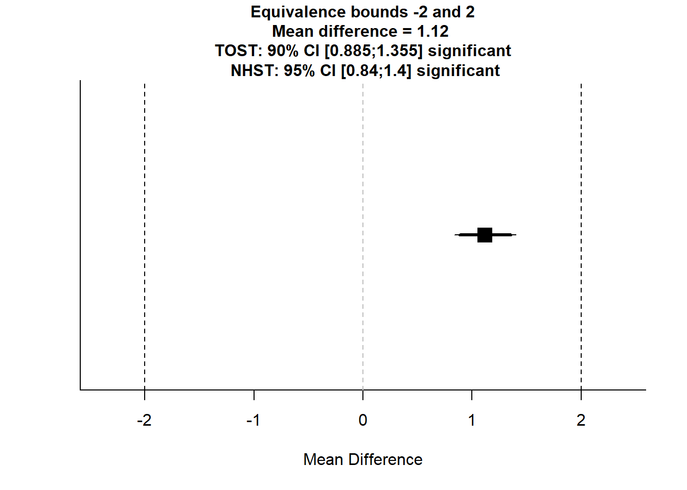
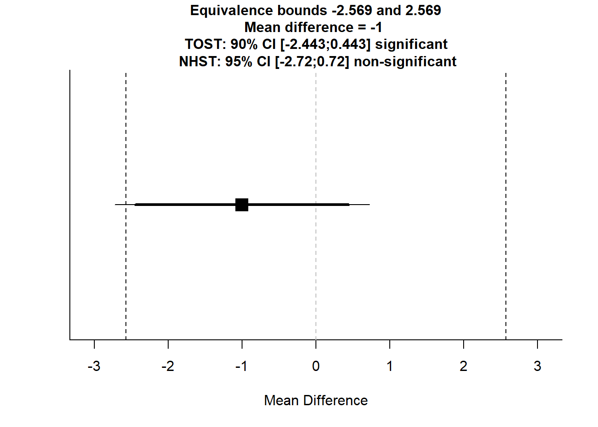
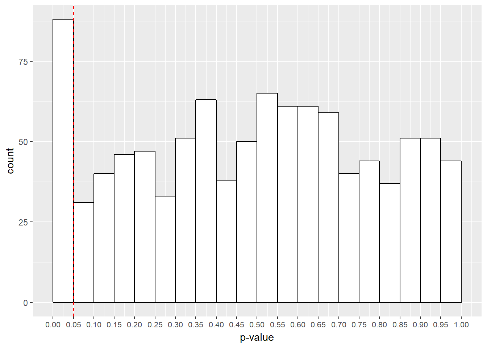

Chapter 10 Reporting Reproducible Research
In this session, we’ll cover how you can use Rmarkdown for reproducible documentation of analyses. In doing so, we’ll cover some aspects that improve the quality of your research, such as reporting effect sizes and the spread/uncertainty in your data (e.g. 95% confidence intervals) and drawing inferences from null results. Furthermore, we’ll cover some aspects of good research practice which go hand in hand with reproducible research, such as data and code archiving and pre-registration.
Specifically, we’ll cover:
- Calculating effect sizes from the r and d families
- Evaluating evidence for the null hypothesis in the Neyman-Pearson framework using the two one-sides tests (TOST) procedure
- Calculating the 95% confidence interval for parameter estimates
- Simulation for understanding research practices
- Data and code archiving, and pre-registration on the Open Science Framework
This session is heavily informed and inspired by the excellent Improving Your Statistical Inferences course by Daniel Lakens. If you get the chance, please enrol on this course. You won’t regret it!
10.1 Getting Started
As always, we first need to load the tidyverse set of package. However, for this chapter we also need the sjstats, effsize, and TOSTER packages. The first two of these new pacakges allow us to calcualte effect sizes, and the final package allows us to conduct the TOST procedure for evaluating evidence for the null hypothesis. Everything else for creating reproducible documents in R comes loaded with RStudio.
# load packages
library(tidyverse)
library(sjstats)
library(effsize)
library(TOSTER)10.2 Creating Reproducible Documents
10.2.1 Creating a Reproducible Report
When doing your research, you’ll often have to write up a number of reports for your studies, be this papers, presentations, or blog posts. One advantage of using R for your analyses is that every time you make a small change to your analysis, for example testing more participants, you have all of the code there to reproduce your analyses using the exact same method as before. However, even with R, you don’t want to recreate your results and translate your outputs every time you change to a new format. Imagine the pain involved in changing all of your table outputs and plots by hand every time you make a minor change? On top of this, you’re very likely to introduce some mistakes when transcribing your results. To remedy this, we can use R to produce reproducible reports.
The advantage of this over simple scripts to conduct your analyses and a separate document used to write up these analyses is that every time you change something in regards to your experiment, you can automatically update everything in your report, reducing the chance of human error. Furthermore, by using reproducible reports, others can read your work and see how you calculated your statistics, which increases the transparency of your work. Why is this a good thing? Aside from catching mistakes in your code, you’re leaving a record for other researchers to follow in their own work. That complex analysis you did can then be reproduced by others, helping to push science forward!
We’ve already used one method for producing reproducible reports in R; the R Notebook. This updates every time you save your document, without rerunning your code. However, we can also produce a similar R Markdown report which requires you to compile your code before it produces output. Here, you include text and code chunks like in your R Notebooks, but you use the Knit button create an output which translates your code into an HTML, PDF, or Word document. I’ve shown you how to do this below.

Creating R Markdown Document
Once you’ve elected to create an R Markdown document, you can choose your output type. For documents, we have the options discussed above. But you can also create presentation slides in R. For the slides in this course, I used the ioslides option. This is nice if you want to include code or the outputs of code directly in your presentations; no more dragging and resizing images by hand!

R Markdown Document Options
For this example, I’ll create an HTML document from our code, but all of the same principles apply with different outputs.
First off, you need to pick a name for your document. Here, I’ve set it to test_html_document. This will be the title of your document once you’ve saved and rendered it.

Defining Your Title and Author in the R Markdown Options
Just save your document somewhere, preferably in its own folder, and you’re good to go. Once you’ve done that, you can change your code and text. Any time you want to render the HTML (or Word, or PDF file) just click the Knit button, and you’ll see a preview of your output once it is done making the document. You can use this to work on the fly, or just look at the output itself (i.e. double clicking the HTML file in your folder) to see how it looks on completion. R turns script like this below into a nice output!

The Markdown Environment
Remember that anything in the code chunks (inserted with Insert, R) from the editor bar in RStudio will be evaluated and you’ll see the output of this code when rendered. You can also include in line code by using one backtick followed by R and then your code and closing this call with another backtick. This is nice for if you want to specify the mean and standard deviation for a group in text.
Formatting text in Markdown is quite easy, and you can find an R Markdown Cheat Sheet here. This covers all of the basics of getting started, and gives you examples of how to do certain features. This does such a good job that I won’t cover it here.
10.2.2 Folder Structure for Reproducible Analyses
Now, we can store all of our analysis and write up in one folder. One way to structue your work is by having everything for one experiment in one folder, called something like “Experiment 1”. Within this folder, you can have several sub-directories for the different things to do with your experiment. This can have as many sub-directories as you like, such as Ethics, Grant Applications, etc., but it’s often good practice to have a folder for your Data, Analysis, and Output. The Data folder should just contain any raw data for your experiment. The Analysis folder can contain any R scripts used to produce your outputs, such as a data cleaning script, which makes your raw data tidy and your code for your R Markdown document. Finally, your Output folder will be where your HTML/Word/PDF documents will get saved when knitted.
Remember using relative file paths? This will be handy for getting R to read data from different folders within the Experiment 1 folder. For example, if we keep our R Markdown file in the Analysis sub folder, we can read data from the data folder by using two dots before the folder and file name. This tells R to look up from our current directory (the Analysis folder) by one folder. So now R is in the Experiment 1 folder. We then tell it to go to the Data folder /Data/ and read the raw data from the .csv file called raw_data.csv.
data <- read_csv("../Data/raw_data.csv")Similarly, we can then keep a normal R script that will render our document for us (without using the Knit button) called something like render_document.R in our Analysis folder. In this, the only code we need is as follows:
rmarkdown::render('test_html_document.Rmd',
output_file = '../Output/test_html_document.html'
)When we run this code, R will execute everything in the R Markdown file, and save the rendered output in our Output folder. This is less convenient than using the Knit button, which is easy if you want your RMarkdown file and HTML output in the same folder. But if we want a nicely structured file system, using the above method is best.
You can find an example of how this works in the reproducible_example folder on in the lesson_materials folder for lesson 10.
Here, you’ll notice I use Kable for printing tables, e.g.
# make example data
tooth_dat <- ToothGrowth %>% group_by(supp) %>% summarise(mean_len = mean(len))
# print table
library(knitr)
kable(tooth_dat) | supp | mean_len |
|---|---|
| OJ | 20.66333 |
| VC | 16.96333 |
This just turns data frames into a nice table output like you’d get in Word. The benefit over just printing data frames is that you get everything in a normal table output, so your data is ordered correctly. You can specify a number of options for Kable, which I won’t cover here. But just know that you can change how anything looks to your liking.
10.2.3 Using R Markdown Templates
We can use different R Markdown templates to save us from specifying too many options. One popular template is the 6th Edition APA article template from the papaja package. You can install this from GitHub using the following code. If the install doesn’t work check you’ve installed devtools first and install if needed by uncommenting the first line.
# install.packages("devtools")
devtools::install_github("crsh/papaja")The GitHub page for pajapa has lots of nice documentation on how to use the different helper functions from this package. This makes for easy and pretty reporting in your document.
You may already have your workflow geared towards word, where you can easily use reference managers like Mendeley to input and report all of your references. One way to get the most out of this is to export your references as a .bib file, and include this in the same folder as your R Markdown document scripts. Then you just include the code bibliography: bibliography.bib under the output command in the header of your R Markdown file, and just use the shorthand to refer to your references in the R Markdown text, e.g. @reference_date and R will sort the references for you. You can find help on using bibliographies in RMarkdown at the RStudio website.
If all of this sounds a little overwhelming, you could just use RMarkdown to make your Results section, and copy those sections across to your working Word file on completion, but you lose a lot of the benefits of automation by doing so.
10.3 Open Science
Reproducbile reports are just one step towards Open Science. Why should we adopt Open Science practices? Briefly, we improve the quality of our work, and create a more collaborative atmosphere in science. Here are just some ways to make your research more open. You should try to adopt:
- Reproducible reports: all code for creating analyses and visualisations is included along with (and goes into making) the document, so people can see what you did. RMarkdown is useful for this.
- Pre-prints: post your articles on a pre-print repository. This means that people can read and give you feedback on your work prior to publication. Many journal articles are fine with you having a pre-print out there, so that’s not much of a concern anymore. One example is the PsyAr\(\chi\)iv for articles in psychology.
- Pre-registration and registered reports: post a document considering your hypotheses, study design (including all measured and manipulated variables), and a plan for analysis. This should include details such as a plan for how to exclude outliers, a justification for your \(\alpha\)-level, the number and type of tests conducted, any correction to p-values if necessary, and a justification of your sample size. This sample size justification can be based on power analyses or even things like time/money constraints, but be clear how you defined your sample size. Pre-registrations allow us to distinguish confirmaty from exploratory analyses, and they formalise your type-I error rate, ensuring that researcher degrees of freedom (e.g. trying different tests, adding more participants, etc.) are considered so you don’t inflate your type-I error rate. You can pre-register your studies using a quick and easy form from As Predicted, or alternatively you can host your study data, materials, and code on the OSF and include your pre-registration there.
- Open access publishing: when possible, publish in Open Access journals. This means that everyone, including the general public, can access your research. If their tax money goes to your science, surely they should have access to the results. There are many Open Access journals, so I’ll leave it up to you to decide where to publish!
- Open materials, data, and code: sharing your materials, data, and code allows for other researchers to build on your work. Furthermore, knowing that it’s out there on the web will make you spend more time checking everything is in order. One bonus is that if your hard drive burns down and you lose a local copy of your work, it’s hosted on a server somewhere, so you’ll always have access to it! Some repositories that are useful for this are the OSF and GitHub.
One thing to bear in mind when sharing your materials, data, and code associated with a project is that you should make everything easy to understand for someone who doesn’t know your study. That’s why it’s useful to include a README file along with your study data explaining (briefly) what was done, what each column and observation represents in your data, and how your code works. As such, commenting your code is a must. Just aim to explain why you’re doing something (not always what you’re doing) as that is often obvious from the code itself. Using a structured system for your folders and files makes it easier for people to know hwere to look (e.g. I want the raw data, so I’ll go to the Data folder and grab the raw_data.csv file!)
All of this goes hand in hand with coding in R. We’ll briefly consider some of the problems associated with flexible analyses masquerading as confirmatory hypothesis testing later in this session in an attempt to hammer home the importance of pre-registration. Note that pre-registration doesn’t preclude flexible analyses or changes to your analysis plan; you just have to state what was changed and why. It’s purely a system of accountability, not restriction. One benefit is that you can use one-sided tests if you make a prediction and pre-register it! For me, pre-registration gets me to think deeply about a study prior to running it, often catching mistakes prior to running the study. This saves time and money re-reunning participants with the fixed study procedure. It also means that I have a record of what I have to do or what I did, so writing up reports is so much easier!
10.4 What to Report
Any report you submit should include a number of components that we’ve already covered in previous sessions. You should include graphs to display your data, along with descriptive (i.e. means, standard deviations, n, etc.) and inferential statistics (where test assumptions have been checked). We’ve covered all of this in previous sessions, but we haven’t spent much time on the other aspects. As such, we’ll look into what else you should report.
Ideally, you should also try to include some measure of uncertainty around the parameter estimates in any models that you report, such as confidence intervals. Furthermore, you should try to include some measure of effect size, so we can really interpret the magnitude of an effect when significant. Finally, if have null results it’s often interesting to explore why this is. We can evaluate evidence in support of the null (no effect; contrasting with an insensitive study due to small sample size etc) under different frameworks, but we’ll cover one method in the Neyman-Pearson null hypothesis significance testing approach later in this lesson; the TOST procedure. We’ll explore ways to do these last 3 later in this session.
10.5 Effect Sizes
When we encountered correlations, we covered effect sizes briefly as the base correlation function in R, cor.test(), by default reports a measure of standardised effect sizes. Unfortunately, not all R functions for running hypothesis tests report a measure of standardised effect size. Indeed, there is a lack of consistency of what is reported; e.g. t-tests but not ANOVAs report 95% confidence intervals around the parameter estimate(s). As such, we often have to do things like calculate standardised effect sizes using other means. Luckily, there are a number of packages that can do this for us.
Although there are other packages out there for producing standardised effect sizes, we’ll use the sjstats package for calculating effect size estimates for ANOVA and linear regression models and the effsize package for calculating effect sizes from t-tests.
But why should you report standardised effect sizes anyway? Well, as sample size increases, we’re more likely to find a significant effect between two groups even if this effect is really small. Effect sizes tell us how much we should care about the effect. But still, you can get similar information by looking at raw effect sizes (e.g. reaction times between group 1 and 2), so why report standarised effect sizes at all? Standised effect sizes allow us to compare effects across different studies (which often have different designs). As a result of this, meta-analysis is reliant on the reporting of standrdised effect sizes, so you’ll be doing science a favour by reporting standardised effect sizes and not forcing other researchers to recompute these values when it comes to including your study in a meta-analysis. Finally, many packages and programs that allow you to analytically calculate the planned power for a study rely on you using standarised effect sizes. So, at the very least, you’ll be doing yourself a favour in the future if you plan a similar study to one you’ve ran previously and you want to calculate your planned power prior to running the new study.
10.5.1 Cohen’s d and Pearson’s r
We have 2 families of effect sizes that we can choose to use in reporting our analyses; the d family and the r family. The differences between these families (and within the families) is briefly summarised below:
- The d family reports standised effect sizes in terms of standardised mean differences. These go from 0 (no effect) to \(\infty\) (infinity). The most simple case is Cohen’s d which is calculated by taking the differences between scores (e.g. across groups) and dividing them by the pooled standard deviation (i.e. ignoring grouping). This effect size family has different versions, such as:
- dz (i.e. the difference between x and y, z) for within-subjects designs;
- dav for a within-subjects design corrected for correlations between measures;
- or Hedge’s g for an unbiased version of Cohen’s d which corrects for the fact that we often do not know the population standard deviaiton.
This final case typically provides a better estimate of effect size (population-based measures often overestimate effect sizes), especially for small sample sizes. Due to this independence of the study design, some researchers argue that Cohen’s d does a better job than many d-like effect sizes as it is insensitive to your experimental design. Thus, it can be generalised more easily to different experimental designs that don’t match your study.
- The r family reports standardised effect sizes in terms of the strength of association between variables. This is calculated in terms of the difference between our observations and the group mean, squared in order to stop negative scores cancelling out positive scores, and then summed up. These terms go from 0 (no association) to 1 (total association). Crucially, these can be reported in squared terms where we look at the proportion of total variance explained by an effect (e.g. based on \(r^2\)). This effect size family, has different versions, such as:
- \(\eta^2\) (eta squared) for more than 2 sets of observations;
- \(\omega^2\) (omega squared) which corrects for the fact that we don’t know the population variance, only the sample variance; (This is good when sample size is small or when we have many levels in a factor.)
- \(\epsilon^2\) (epsilon squared), which is possibly the least biased of all alternatives.
Crucially, these effect size estimates, such as \(\eta^2\), sum to 100%, so we can use partial forms of these explain variance by only 1 factor. This is useful in experimental designs, and allows us to compare effect sizes between studies.
Selection of which effect size to use should come from an informed position. As such, I recommend that you read this great article by Daniel Lakens which explains the differences between effect size measures above in relatively simple terms.
How should you select between reporting d or r? When sample sizes are very different across groups, d is typically less biased than r (McGrath & Meyer, 2006), but many find r easier to interpret.
In using standardised effect sizes to calculate power you should generally avoid benchmarks, such as small, medium, and large effects, and instead focus on having an informed idea from the wider literature. However, be wary of publication bias which may overstate effect sizes. One alternative here is to specify your smallest effect size of interest in your study, and design your study around detecting that.
10.5.2 Calculating Effect Sizes
10.5.2.1 Cohen’s d and Hedge’s g
Look at the reults of an independent-sample t-test.
set.seed(5)
ind_t_data <- tibble(
dv = c(rnorm(n = 10000, mean = 100, sd = 10),
rnorm(n = 10000, mean = 99, sd = 10)),
id = c(rep("a", 10000), rep("b", 10000))
)
t.test(dv ~ id, data = ind_t_data)##
## Welch Two Sample t-test
##
## data: dv by id
## t = 7.8329, df = 19998, p-value = 5.006e-15
## alternative hypothesis: true difference in means is not equal to 0
## 95 percent confidence interval:
## 0.8395062 1.3998889
## sample estimates:
## mean in group a mean in group b
## 100.0181 98.8984It’s significant, but should we really care about this difference between these groups? One way to check this would be to look at the unstandardised effect sizes.
ind_t_data %>% group_by(id) %>% summarise(mean_dv = mean(dv))## # A tibble: 2 x 2
## id mean_dv
## <chr> <dbl>
## 1 a 100.
## 2 b 98.9Well, a mean difference of around 1.2 doesn’t seem like much to me. But, of course this all needs to be put in the perspective of the study you’re running. We can calculate standardised effect size for this study using the cohen.d() function from the effsize package. Here, we’ll make sure that we get effect sizes reported without the correction for paired data (as these samples are independent), and we’ll make sure that we get Hedge’s g and not Cohen’s d.
cohen.d(dv ~ id, paired = F, hedges.correction = T, data = ind_t_data)##
## Hedges's g
##
## g estimate: 0.1107692 (negligible)
## 95 percent confidence interval:
## inf sup
## 0.08302822 0.13851023Try changing the parameters in the arguments in the cohen.d() function above. How do the results change if we get Cohen’s d? Nicely, we get a 95% confidence interval around our estimates by default.
10.5.2.2 Eta Squared and Omega Squared
For calculating effect sizes from ANOVA designs, we’ll use the sjstats package. Here, we’ll see how we can simply calculate different alternatives from the r family of effect sizes using this package. For this example, we’ll use the ToothGrowth data set that we used in Chapter 7. Remember, this looks at the effect of different supplements, and doses of those supplements, on tooth growth in guinea pigs.
# load the data
data("ToothGrowth")
# convert to tibble and make dose a factor
tooth <- ToothGrowth %>%
mutate(dose = factor(dose)) %>%
as.tibble()
# see the output
tooth## # A tibble: 60 x 3
## len supp dose
## <dbl> <fct> <fct>
## 1 4.2 VC 0.5
## 2 11.5 VC 0.5
## 3 7.3 VC 0.5
## 4 5.8 VC 0.5
## 5 6.4 VC 0.5
## 6 10 VC 0.5
## 7 11.2 VC 0.5
## 8 11.2 VC 0.5
## 9 5.2 VC 0.5
## 10 7 VC 0.5
## # ... with 50 more rowsNext, we’ll fit a linear model to the data.
tooth_aov <- aov(len ~ supp * dose, data = tooth)
summary(tooth_aov)## Df Sum Sq Mean Sq F value Pr(>F)
## supp 1 205.4 205.4 15.572 0.000231 ***
## dose 2 2426.4 1213.2 92.000 < 2e-16 ***
## supp:dose 2 108.3 54.2 4.107 0.021860 *
## Residuals 54 712.1 13.2
## ---
## Signif. codes: 0 '***' 0.001 '**' 0.01 '*' 0.05 '.' 0.1 ' ' 1OK, so we have a significant main effect of both factors, and a significant interaction. As such, we probably want the effect sizes for this. We can do this using the eta_sq() function for \(\eta^2\) and omega_sq() for \(\omega^2\). For both functions, we can set the partial argument to true (TRUE/T) or false (FALSE/F) to get the partial forms of these effect sizes.
10.5.2.2.1 Eta Squared
First, we’ll calculate \(\eta^2\).
eta_sq(tooth_aov, partial = F)## term etasq
## 1 supp 0.059
## 2 dose 0.703
## 3 supp:dose 0.03110.5.2.2.2 Omega Squared
Then we’ll calculate \(\omega^2\).
omega_sq(tooth_aov, partial = F)## term omegasq
## 1 supp 0.055
## 2 dose 0.693
## 3 supp:dose 0.024Try changing the partial argument in both of these functions to see how this works.
Unfortunately, I’m not aware of any package at the moment that collects absolutely every effect size metric that you could possibly compute in R. However, as you can see it’s relatively easy to calculate effect sizes with many packages in R as long as you know what you want to calcualte.
10.6 Confidence Intervals
Any report should contain uncertainty about the parameter estimates. This can be easily calculated using the confint() function on any model object. There are different methods for calculating confidence intervals in this function. The default is profile based confidence intervals, but you can specify to calculate these via parameteric bootstrapping, which, assuming your model is correct (i.e. you’re not violating assumptions), tends to be preferred. We can try this with our fitted model, tooth_aov. How these are calculated tends to be more a concern for mixed effects models, but we can see how we get confidence intervals around our parameter estimates from our ANOVA model.
confint(tooth_aov, method = "boot")## 2.5 % 97.5 %
## (Intercept) 10.9276907 15.532309
## suppVC -8.5059571 -1.994043
## dose1 6.2140429 12.725957
## dose2 9.5740429 16.085957
## suppVC:dose1 -5.2846186 3.924619
## suppVC:dose2 0.7253814 9.934619It’s really that easy!
10.7 Evaluating Evidence for the Null Hypothesis
Often in psychology we end up with a non-significant results from our statistical tests. However, it’s very difficult to interpret what this means. You may be tempted to conclude that a non-significant result means that there is no effect in the population, but this is incorrect. In fact, it’s likely that nothing in the real world has an effect size of exactly 0. As such, we need a way to determine whether or not an effect is small enough that we don’t care about it. One way to do this in the frequentist framework is with equivalence tests.
One method for testing for equivalence is the two one-sided test (TOST) procedure (Schuirmann, 1987) whereby we specify the upper and lower bounds within which we deem effects to be statistcally equivalent. For example, let’s say we test two groups of people on an IQ test, and group 1 scores 100, while group 2 scores 102. This is a difference of 2 IQ points between groups. If our bounds for equivalence are difference scores of -5 and +5, we can say that any difference score within these bounds is statistically equivalent, and as such we can conclude the absence of an effect in the population. Since our score of 2 is between these bounds, we state that the two groups are equivalent.
With the TOST procedure, we effectively test for an effect more extreme than our bounds using one-sided t-tests. As such, the null hypothesis of the TOST procedure is the presence of a true effect (i.e. the scores don’t differ from our upper and lower bounds; they aren’t within our equivalence bound) and the alternative hypothesis is that our effects fall within the lower and upper bounds (i.e. the scores differ from the lower and upper bounds; they are both smaller than the upper, and larger than the smaller bounds). This takes some getting used to, but just remember that significant effects reveal equivalence.
10.7.1 Independent Samples TOST
Here, we’ll take the data from our independent samples t-test from before. Remember, the data revealed that the difference between the groups was around 1.2 points on some test, as shown below.
ind_t_data %>% group_by(id) %>% summarise(mean_dv = mean(dv))## # A tibble: 2 x 2
## id mean_dv
## <chr> <dbl>
## 1 a 100.
## 2 b 98.910.7.1.1 TOST for Raw Scores
Here, we’ll test for equivalence based on raw scores and effect sizes in our samples. For the first case we’ll use the TOSTtwo.raw() function to calculate equivalence for an independent-samples t-test based on raw scores. First, we need to calculate some summary statistics from our groups.
# make a summary
ind_summary <- ind_t_data %>%
group_by(id) %>%
summarise(mean = mean(dv),
sd = sd(dv),
n = n()
)
ind_summary # return the summary## # A tibble: 2 x 4
## id mean sd n
## <chr> <dbl> <dbl> <int>
## 1 a 100. 10.1 10000
## 2 b 98.9 10.1 10000Then, we’ll pass these results on to the function. Here, we’ll use a new function called with() which makes R evaluate our column names in the scope of the summary data frame (or more generally, in whatever data you pass to it). This just stops us from having to type ind_summary$mean[1], ind_summary$mean[2], etc. Within this, we use the TOST function and we have to define the means, standard deviations, and ns for each group. Group A here is always the first row in each column, so we use mean[1] to refer to their mean, etc. Aside from their details from the study, we need to determine our upper and lower bounds. These are -2 and 2 here, saying we don’t care about differences of only 2 between groups. Finally, we set our alpha level to determine out type-I error rate, and we specify if we assume equal variances.
with(ind_summary,
TOSTtwo.raw(m1 = mean[1],
m2 = mean[2],
sd1 = sd[1],
sd2 = sd[2],
n1 = n[1],
n2 = n[2],
low_eqbound = -2,
high_eqbound = 2,
alpha = 0.05,
var.equal = TRUE
)
)## TOST results:
## t-value lower bound: 21.82 p-value lower bound: 0.00000000000000000000000000000000000000000000000000000000000000000000000000000000000000000000000000000001
## t-value upper bound: -6.16 p-value upper bound: 0.0000000004
## degrees of freedom : 19998
##
## Equivalence bounds (raw scores):
## low eqbound: -2
## high eqbound: 2
##
## TOST confidence interval:
## lower bound 90% CI: 0.885
## upper bound 90% CI: 1.355
##
## NHST confidence interval:
## lower bound 95% CI: 0.84
## upper bound 95% CI: 1.4
##
## Equivalence Test Result:
## The equivalence test was significant, t(19998) = -6.158, p = 0.000000000375, given equivalence bounds of -2.000 and 2.000 (on a raw scale) and an alpha of 0.05.## ##
## Null Hypothesis Test Result:
## The null hypothesis test was significant, t(19998) = 7.833, p = 0.00000000000000501, given an alpha of 0.05.## ##
## Based on the equivalence test and the null-hypothesis test combined, we can conclude that the observed effect is statistically different from zero and statistically equivalent to zero.## 
Here, we get an output telling us the result of our test in regards to a normal t-test (NHST), and under the TOST procedure. We also get reminder of our equivalence bounds, and we get some confidence intervals around our scores. In this case, the normal t-test (NHST) was significant, as was the TOST in both directions. This means that although we found a statistically significant difference between the groups, they are statistically equivalent with our criteria. As you can see, differences between groups can be statistically significant, but the effect is so small that we don’t care.
10.7.1.2 TOST for Effect Sizes
Next, we’ll look at a case when we already know the means and standard deviations, but we define our bounds in terms of effect sizes. For this, we only need the TOSTtwo() function. The main difference here is that we specify our bounds in terms of effect sizes (in this case, Cohen’s d), but everything else remains the same. We’ll use a simpler case where we just input some values for the means, standard deviations, and ns.
TOSTtwo(
m1 = 100,
m2 = 101,
sd1 = 9,
sd2 = 8.1,
n1 = 192,
n2 = 191,
low_eqbound_d = -0.3,
high_eqbound_d = 0.3,
alpha = 0.05,
var.equal = FALSE
)## TOST results:
## t-value lower bound: 1.79 p-value lower bound: 0.037
## t-value upper bound: -4.08 p-value upper bound: 0.00003
## degrees of freedom : 377.25
##
## Equivalence bounds (Cohen's d):
## low eqbound: -0.3
## high eqbound: 0.3
##
## Equivalence bounds (raw scores):
## low eqbound: -2.5686
## high eqbound: 2.5686
##
## TOST confidence interval:
## lower bound 90% CI: -2.443
## upper bound 90% CI: 0.443
##
## NHST confidence interval:
## lower bound 95% CI: -2.72
## upper bound 95% CI: 0.72
##
## Equivalence Test Result:
## The equivalence test was significant, t(377.25) = 1.793, p = 0.0369, given equivalence bounds of -2.569 and 2.569 (on a raw scale) and an alpha of 0.05.## ##
## Null Hypothesis Test Result:
## The null hypothesis test was non-significant, t(377.25) = -1.143, p = 0.254, given an alpha of 0.05.## ##
## Based on the equivalence test and the null-hypothesis test combined, we can conclude that the observed effect is statistically not different from zero and statistically equivalent to zero.## 
Here, we can see that the Welch’s independent samples t-test was non-significant, but the TOST was significant. This means that we didn’t find a significant difference between groups and the groups are statistically equivalent.
This pacakge covers TOST for meta-analysis, one- independent- and paired-samples t-tests. Check out these functions by typing ??TOST in the console. There’s a lot more to understanding this procedure than I can cover here, but if you’re interested in equivalence tests, you should check out this primer by the package author, Daniel Lakens.
Next, we’ll cover how we can use R to understand just why we need other open science practices along with the statistics that we calculate and report in R.
10.8 Understanding Problematic Design Choices
Finally, we’ll touch briefly on why you should adopt Open Science practices now that you know how to create reproducible reports. We’ll use some simulations to explore cases where you may inadvertantly inflate your error rate through flexible analysis plans. Namely, we’ll look at optional stopping; choosing when you should stop recruiting participants on the fly based on your test statistics (and how to avoid inflating your error rate), and why statistics can’t save you from poor hypotheses.
10.8.1 Optional Stopping (Without Correction)
The real strength in null hypothesis significance testing is that it enables us to make statements about how how often we’ll be wrong in the long run (i.e. to make a type-I error) if we make our inferences based on a certain threshold p-value. However, this is only the case if you stick to your research plan from the outset.
Let’s look at a case where we can end up fooling ourselves that we have an effect when there isn’t a true effect in the population if we change our desgn on the fly. This example is inspired by the section on optional stopping in the Improving your Statistical Inferences course by Daniel Lakens.
Here, we’ll test our hypothesis that two groups have different IQs (which isn’t the case), but if after the first 60 participants we have a non-significant result we’ll recruit another 20 and see how this affects our p-value distribution.
First, we’ll make some functions to (1) sample data and put them in a tibble with a group identifier, (2) run a t-test on those groups and capture the p-value, and (3) a biased test where we run a t-test on our groups, but if it’s non-significant, we run additional participants and rerun the t-test with the larger sample size.
# sample data and make a tibble with DV and ID based on input group sample size
# this is fixed at means of 100 and sd of 15 for each group
sample_groups <- function(n_group){
group_one <- rnorm(n = n_group, mean = 100, sd = 15)
group_two <- rnorm(n = n_group, mean = 100, sd = 15)
data <- tibble(dv = c(group_one, group_two),
id = c(rep("group_one", n_group),
rep("group_two", n_group)
)
)
}
# run a t-test and extract the p-value for a tibble
# columns must be named dv and id for dependent variables and group ID
test_groups <- function(tibble_data) {
test <- t.test(dv ~ id, data = tibble_data, paired = FALSE)
test$p.value
}
# optional stopping without correction:
# sample data and extract p-values from a t-test
# if non-significant, sample additional people and retest
bias_test <- function(sample_size, additional_n) {
original_data <- sample_groups(sample_size)
p_val <- test_groups(original_data)
ifelse(p_val >= .05,
p_val <- test_groups(
rbind(original_data, sample_groups(additional_n))
),
p_val
)
}Now that we have our functions ready, we can caputre all p-values assuming we run the study 1000 times with the idea of testing and getting more participants before re-testing if non-significant.
set.seed(100) # uncomment if you want different values each time
p_vals <- replicate(n = 1000, bias_test(30, 10))
# calculate the proportion of p-values below .05
mean(p_vals < 0.05)## [1] 0.088What we see is that 8.8% of our p-values are signficant below the .05 \(\alpha\)-level. Really though, this should be 5% if the null hypothesis is true (which it is). This means that we’re inflating our type-I error rate by being so flexible in our testing and analysis procedure. It’s easy to fool yourself this way!
Let’s have a look at a plot of our p-values. You can see that we have many more p-values below the .05 threshold. This is despite the fact that p-values should be evenly distributed under the null hypothesis.
p_plot <- ggplot() +
geom_histogram(aes(p_vals),
binwidth = 0.05,
boundary = 0,
fill = "white",
colour = "black") +
scale_x_continuous(limits = c(0, 1),
breaks = seq(from = 0, to = 1, by = 0.05)
) +
geom_vline(xintercept = 0.05, linetype = 2, colour = "red") +
labs(x = "p-value") +
theme(axis.text.x = element_text(size=8))
p_plot
One way to remedy this situation is through optional stopping with a p-value correction. If you specify how many times you will look at your data and run a test before deciding whether or not to test more participants, you can correct your p-value to account for the infaltion in type-I error rate. One simple way is with the Bonferroni correction. Take your p-value, and multiply it by how many times you tested the data. There are less conservative procedures out there, but this is one simple method.
10.8.2 Bad Hypotheses
If you have an outlandish hypothesis, where your hypothesis is unlikely to be true, you have a very low chance that a positive result indicates your hypothesis is true. We’ll explore an example from the excellent Statistical Rethinking by Richard McElreath to test the truth of this statement. (Honestly, this book has changed how I understand statistics!)
To test this idea this, we can rely on Bayes’ theorem. I won’t show you the ins and outs of this theorem, but just know that the function that allows you to change the power of your study, your alpha level, and the probability that your hypothesis is true. The default values make sure that you have a design with 90% power and a 5% \(\alpha\)-level, assuming that your hypothesis only has a 1% chance of being true.
test_prob_hyp_true <- function(power = 0.90, alpha = 0.05, hyp_chance = 0.01){
# calculate probabilities
prob_false <- 1 - hyp_chance
prob_positive <- power * hyp_chance + alpha * prob_false
prob_positive_is_true <- power * hyp_chance / prob_positive
# output probability of a positive result being true
print(paste("There is a",
round(prob_positive_is_true*100, 2),
"% chance of a positive result being true.")
)
}We’ll test the probability of a positive result being true under these default assumptions.
test_prob_hyp_true()## [1] "There is a 15.38 % chance of a positive result being true."But what if we change the probability of the hypothesis being true to even 25%?
test_prob_hyp_true(hyp_chance = 0.25)## [1] "There is a 85.71 % chance of a positive result being true."Even with only a \(\frac{1}{4}\) chance of our hypothesis being true, we can now more confidently accept a positive result as being positive. The take home message here is that even if you design and test your studies to your best abilities, with very high power, positive findings based on bad hypotheses are likely to be misleading; good statistics can’t save you from bad hypotheses.
10.9 The Final Lesson
Congratulations, you’ve made it! Now watch this video and follow Jeff’s advice.
If you ever get stuck with anything, these two book covers always help me.


10.10 Exercises
For these exercises, we will look at the core concepts from this lesson. As always, load the libraries necessary for this lesson.
library(tidyverse)
library(effsize)
library(TOSTER)For this exercise, we’ll look at doing a full analysis using a data set and report from the excellent Open Stats Lab.
Schroeder and Epley(2015) explored whether you’d be more likely to get a new job after delivering a speech describing your skills, or if you wrote a speech and had a potential employer read it out.
Prediction: A person’s speech (i.e., vocal tone, cadence, and pitch) communicates information about intelligence better than written words. Participants: 39 professional recruiters in one of two conditions. Conditions: Listen to audio recording of speech, or read speech aloud. Dependent Variable: Intellect aggregated across intelligence, competence, and thoughtfulness.
Also rated overall impression (composite of positive and negative), and how likely they would be to hire them (0 = not at all, 10 = extremely likely).
# unique URL to the data
id <- "0Bz-rhZ21ShvOei1MM24xNndnQ00" # google file ID
# read in the data
raw_data <- read_csv(
sprintf(
"https://docs.google.com/uc?id=%s&export=download", id)
)10.10.1 Question 1
Subset the data to the columns relevant to the research question, and make the names all lowercase for consistency. Call this, data_subset.
10.10.2 Question 2
Summarise the data, creating means, standard deviations, and ns for each group in the data set. Call this data_summary. Put the summary in a table using the kable() command.
10.10.3 Question 3
Create a plot to display the differences across the groups.
10.10.4 Question 4
Test the assumptions of an independent-samples t-test.
10.10.5 Question 5
Assuming the test assumptions are met, fit a model to your data, save this as t_test_output. For this case, we will just look at the effect of Intellect. Output the test on completion. (Note: do not use summary() here, instead just type the name of the object.)
10.10.6 Question 6
Calculate effect sizes for the t-test. The choice of effect size is up to you.
10.10.7 Question 7
Perform a TOST on your data evaluating the equivalence against a lower bound of -0.5 and upper bound of 0.5. What does this tell us? (Hint: Use the with() function on the data_summary object to access the columns for that data source.)
10.10.8 Question 8
A. Fit a linear model to the data. Save this as lm_test_output. How does this compare with the t-test? B. Output 95% confidence intervals for the linear model. Why do they differ to that of the t-test?